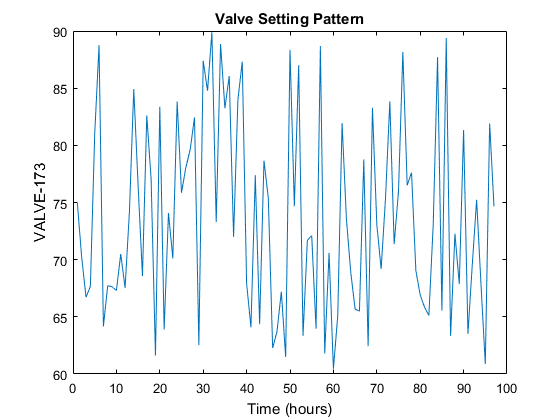

Defining pattern time for valves setting via Bin functions
d=epanet('BWSN_Network_1.inp','Bin');
t = d.getBinTimesInfo;
hydstep = t.BinTimeHydraulicStep;
duration = t.BinTimeSimulationDuration;
a = 60; b = 90;
settings = (b-a).*rand((duration/hydstep)+1,1) + a;
valveID = 'VALVE-173';
valveIndex = d.getBinLinkIndex(valveID);
nodeIndex = d.getBinNodeIndex('JUNCTION-112');
settings = num2str(settings,'%04.4f');
hrs = duration/3600;
hours = 0:hrs;
step = 0:hydstep/60:55;
i=1; Time = cell(hrs,1);
for u=1:hrs
for j=1:length(step)
Time{i} = sprintf('%03d:%02d:00',hours(u),step(j));
Controls(i,: ) = ['LINK ',valveID,' ',settings(i,:),' AT TIME ',Time{i}];
i=i+1;
end
end
d.addBinControl(Controls);
d.setCMDCODE(1)
Sim = d.getBinComputedAllParameters;
d.BinClose;
disp('Create random settings')
disp('----------------------')
disp('a = 60; b = 90;')
disp('settings = (b-a).*rand((duration/hydstep)+1,1) + a;')
figure;
plot(Sim.BinnodePressure(:,nodeIndex));
title('Valve Setting Pattern');
xlabel('Time (hours)');
ylabel(valveID);
Create random settings
----------------------
a = 60; b = 90;
settings = (b-a).*rand((duration/hydstep)+1,1) + a;
